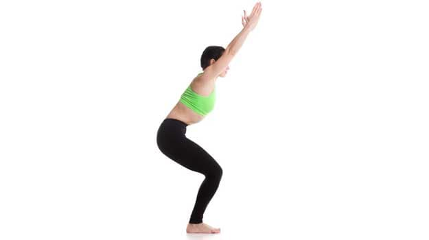

yogga poses

An intensely powerful pose, this one strengthens the muscles of the legs and arms. It builds your willpower and has an energizing effect on the body and mind. Stand straight with your feet slightly apart. Stretch your arms but don’t bend your elbow. Inhale and bend your knees, pushing your pelvis down like you are sitting on chair. Keep your hands parallel to the ground and back straight. Take deep breaths. Bend gradually but make sure your knees don’t go beyond your toes.
chair pose
NEXT